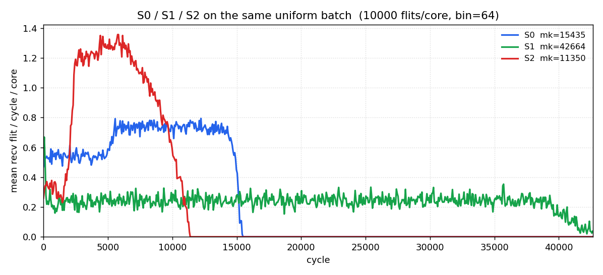
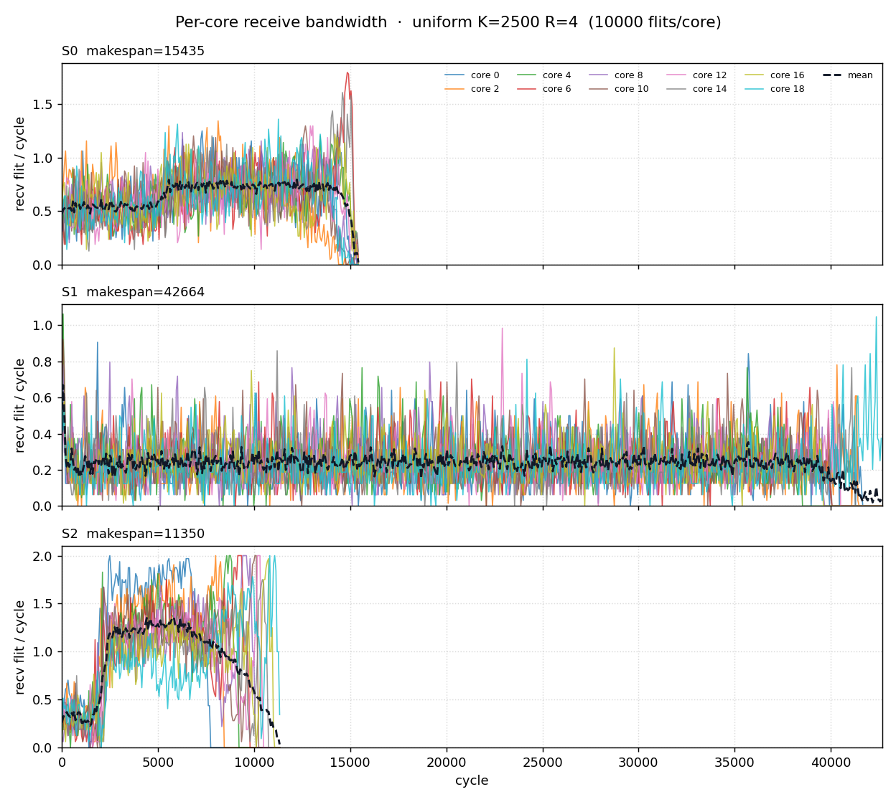

Even indices are AI cores, odd indices are memory Home Agents. Two independent bidirectional ring planes; each node has one port per plane and the two directions of a plane share that port's buffer. Traffic is read-return (1-flit request, R-flit response). Makespan is the cycle the last response flit is drained at the requesting core.
S0 / S1 / S2 are not three different fabrics. They share one point-to-point credit-based datapath, the same 8-deep boarding queue, and the same I-tag / E-tag guarantees. The sweep only changes how a source is allowed to spend credit (RR, AIMD rate, or a request-grant match).
| layer | S0 RR | S1 AIMD | S2 request-grant |
|---|---|---|---|
| hop latency between neighbours | 2 cy | 2 cy | 2 cy |
| boarding queue per (node, plane) | 8 flits | 8 flits | 8 flits |
| eject queue per (node, plane) | 4 + 1 E-tag | 4 + 1 E-tag | 4 + 1 E-tag |
| inject / eject ports | 1 per (node, plane) | 1 per (node, plane) | 1 per (node, plane) |
| point-to-point credit FC | yes | yes | yes |
| I-tag (inject starvation bound) | yes | yes | yes |
| E-tag (leave / reserved eject) | yes | yes | yes |
| RR inject when credit is available | yes | yes | — |
| AIMD source rate (piggybacked fails) | — | yes | — |
| request-grant match before inject | — | — | yes |
t_inj cycles on a
(plane, dir) raises I-tag and inhibits other injects on that ring until
it boards. Bounds inject starvation.t_xfer times raises E-tag and may use resv_ej
reserved eject slots; otherwise it deflects and rides another lap.
Rebound onto reserved eject entries — an adaptation, not HiRD's
transfer-FIFO E-tag.16/16 checks passed.
| check | result |
|---|---|
| topo_roles_and_wrap | ok |
| workload_counts | ok |
| s0_completes_and_conserves | ok |
| s1_completes_and_conserves | ok |
| three_schemes_same_flits | ok |
| makespan_ge_bound | ok |
| inring_never_blocked | ok |
| itag_starve_finite | ok |
| etag_deflect_bounded | ok |
| boarding_queue_depth | ok |
| ports_per_node_plane | ok |
| rg_replay_conflict_free | ok |
| rg_req_before_resp | ok |
| uniform_multi_seed_s0 | ok |
| cost_ring2_preserves_mesh_cal | ok |
| plane_sel_all_work | ok |
Same credit + I-tag / E-tag datapath on every row. S0 = RR inject, no source rate control. S1 = S0 + piggybacked failure counts + AIMD token bucket. S2 = request-grant iSLIP (I=2, interval, arc) on the same hops. Bound is the analytic floor (link / port / cut / single-txn).
| scheme | pattern | R | m or K | mean | min | max | bound | ok |
|---|---|---|---|---|---|---|---|---|
| S0 | allpairs | 1 | 2 | 96.0 | 96 | 96 | 38 | yes |
| S0 | allpairs | 1 | 4 | 156.0 | 156 | 156 | 50 | yes |
| S0 | allpairs | 1 | 1 | 82.0 | 82 | 82 | 38 | yes |
| S0 | allpairs | 4 | 4 | 313.0 | 313 | 313 | 140 | yes |
| S0 | allpairs | 4 | 1 | 129.0 | 129 | 129 | 41 | yes |
| S0 | allpairs | 4 | 2 | 196.0 | 196 | 196 | 70 | yes |
| S0 | allpairs | 8 | 1 | 206.0 | 206 | 206 | 65 | yes |
| S0 | allpairs | 8 | 2 | 310.0 | 310 | 310 | 130 | yes |
| S0 | allpairs | 8 | 4 | 517.0 | 517 | 517 | 260 | yes |
| S0 | uniform | 1 | 50 | 154.0 | 144 | 172 | 67 | yes |
| S0 | uniform | 1 | 100 | 260.7 | 250 | 271 | 135 | yes |
| S0 | uniform | 1 | 20 | 92.0 | 86 | 96 | 38 | yes |
| S0 | uniform | 4 | 50 | 367.3 | 354 | 384 | 192 | yes |
| S0 | uniform | 4 | 100 | 668.7 | 652 | 685 | 376 | yes |
| S0 | uniform | 4 | 20 | 187.7 | 178 | 195 | 95 | yes |
| S0 | uniform | 8 | 50 | 672.7 | 646 | 701 | 362 | yes |
| S0 | uniform | 8 | 100 | 1275.3 | 1264 | 1286 | 698 | yes |
| S0 | uniform | 8 | 20 | 296.7 | 287 | 303 | 177 | yes |
| S1 | allpairs | 1 | 1 | 80.0 | 80 | 80 | 38 | yes |
| S1 | allpairs | 1 | 2 | 130.0 | 111 | 159 | 38 | yes |
| S1 | allpairs | 1 | 4 | 319.7 | 205 | 385 | 50 | yes |
| S1 | allpairs | 4 | 1 | 130.3 | 115 | 161 | 41 | yes |
| S1 | allpairs | 4 | 2 | 300.0 | 170 | 447 | 70 | yes |
| S1 | allpairs | 4 | 4 | 770.3 | 554 | 1095 | 140 | yes |
| S1 | allpairs | 8 | 2 | 631.7 | 370 | 1148 | 130 | yes |
| S1 | allpairs | 8 | 4 | 1308.3 | 789 | 2310 | 260 | yes |
| S1 | allpairs | 8 | 1 | 273.7 | 159 | 503 | 65 | yes |
| S1 | uniform | 1 | 100 | 1252.0 | 1180 | 1354 | 135 | yes |
| S1 | uniform | 1 | 20 | 110.3 | 102 | 119 | 38 | yes |
| S1 | uniform | 1 | 50 | 528.7 | 489 | 603 | 67 | yes |
| S1 | uniform | 4 | 100 | 1762.7 | 1714 | 1842 | 376 | yes |
| S1 | uniform | 4 | 20 | 258.0 | 238 | 274 | 95 | yes |
| S1 | uniform | 4 | 50 | 798.7 | 754 | 822 | 192 | yes |
| S1 | uniform | 8 | 20 | 353.3 | 318 | 378 | 177 | yes |
| S1 | uniform | 8 | 50 | 1021.0 | 944 | 1157 | 362 | yes |
| S1 | uniform | 8 | 100 | 2164.0 | 2086 | 2288 | 698 | yes |
| S2 | allpairs | 1 | 2 | 57.0 | 57 | 57 | 38 | yes |
| S2 | allpairs | 1 | 4 | 93.0 | 93 | 93 | 50 | yes |
| S2 | allpairs | 1 | 1 | 46.0 | 46 | 46 | 38 | yes |
| S2 | allpairs | 4 | 2 | 153.0 | 153 | 153 | 70 | yes |
| S2 | allpairs | 4 | 4 | 259.0 | 259 | 259 | 140 | yes |
| S2 | allpairs | 4 | 1 | 88.0 | 88 | 88 | 41 | yes |
| S2 | allpairs | 8 | 1 | 146.0 | 146 | 146 | 65 | yes |
| S2 | allpairs | 8 | 2 | 283.0 | 283 | 283 | 130 | yes |
| S2 | allpairs | 8 | 4 | 502.0 | 502 | 502 | 260 | yes |
| S2 | uniform | 1 | 100 | 187.0 | 184 | 190 | 135 | yes |
| S2 | uniform | 1 | 20 | 62.0 | 61 | 63 | 38 | yes |
| S2 | uniform | 1 | 50 | 104.0 | 101 | 109 | 67 | yes |
| S2 | uniform | 4 | 100 | 526.0 | 501 | 540 | 376 | yes |
| S2 | uniform | 4 | 20 | 145.3 | 143 | 149 | 95 | yes |
| S2 | uniform | 4 | 50 | 278.3 | 266 | 288 | 192 | yes |
| S2 | uniform | 8 | 100 | 998.0 | 947 | 1031 | 698 | yes |
| S2 | uniform | 8 | 20 | 264.0 | 260 | 267 | 177 | yes |
| S2 | uniform | 8 | 50 | 533.7 | 525 | 541 | 362 | yes |
Wall 71.4s, 864 rows. Quick=False.
uniform K=2500 R=4 seed=0,
plane_sel=least_occupied, hop latency 2 cy,
boarding queue 8 deep, eject queue
4. Every core receives the same number of response
flits. Overlay shares one time axis so S0 / S1 / S2 can be compared directly.
Board counts are for response data destined to that core:
上环 = successful injects, CW = dir +1, CCW = dir −1, 失败 = inject attempts
that found the slot busy or I-tag blocked (AIMD token denials are not
counted). S2 still has I-tag / E-tag; its 失败 is 0 because a grant is
placed only when the hop is already free, so the reactive tags are not
exercised on this closed batch.


| S0 RR | S1 AIMD | S2 request-grant | |
|---|---|---|---|
| makespan | 15435 | 42664 | 11350 |
| deflections | 12813 | 3061 | 0 |
| peak boarding queue | 8 | 8 | — |
| peak eject queue | 1 | 1 | 0 |
| resp latency p50 | 5556 | 14 | — |
| resp latency p99 | 9663 | 61 | — |
| core 0 | 上环 10000 (CW 5008 / CCW 4992) 失败 20096 (CW 9797 / CCW 10299) | 上环 10000 (CW 5008 / CCW 4992) 失败 2721 (CW 1366 / CCW 1355) | 上环 10000 (CW 5008 / CCW 4992) 失败 0 (CW 0 / CCW 0) |
| core 2 | 上环 10000 (CW 4888 / CCW 5112) 失败 20656 (CW 10522 / CCW 10134) | 上环 10000 (CW 4888 / CCW 5112) 失败 2514 (CW 1213 / CCW 1301) | 上环 10000 (CW 4888 / CCW 5112) 失败 0 (CW 0 / CCW 0) |
| core 4 | 上环 10000 (CW 4920 / CCW 5080) 失败 20041 (CW 9891 / CCW 10150) | 上环 10000 (CW 4920 / CCW 5080) 失败 3110 (CW 1430 / CCW 1680) | 上环 10000 (CW 4920 / CCW 5080) 失败 0 (CW 0 / CCW 0) |
| core 6 | 上环 10000 (CW 4924 / CCW 5076) 失败 18751 (CW 9153 / CCW 9598) | 上环 10000 (CW 4924 / CCW 5076) 失败 2992 (CW 1485 / CCW 1507) | 上环 10000 (CW 4924 / CCW 5076) 失败 0 (CW 0 / CCW 0) |
| core 8 | 上环 10000 (CW 5124 / CCW 4876) 失败 19635 (CW 9931 / CCW 9704) | 上环 10000 (CW 5124 / CCW 4876) 失败 2827 (CW 1515 / CCW 1312) | 上环 10000 (CW 5124 / CCW 4876) 失败 0 (CW 0 / CCW 0) |
| core 10 | 上环 10000 (CW 4828 / CCW 5172) 失败 20625 (CW 9577 / CCW 11048) | 上环 10000 (CW 4828 / CCW 5172) 失败 2934 (CW 1384 / CCW 1550) | 上环 10000 (CW 4828 / CCW 5172) 失败 0 (CW 0 / CCW 0) |
| core 12 | 上环 10000 (CW 5056 / CCW 4944) 失败 20592 (CW 10342 / CCW 10250) | 上环 10000 (CW 5056 / CCW 4944) 失败 2510 (CW 1345 / CCW 1165) | 上环 10000 (CW 5056 / CCW 4944) 失败 0 (CW 0 / CCW 0) |
| core 14 | 上环 10000 (CW 4912 / CCW 5088) 失败 19665 (CW 9554 / CCW 10111) | 上环 10000 (CW 4912 / CCW 5088) 失败 2788 (CW 1401 / CCW 1387) | 上环 10000 (CW 4912 / CCW 5088) 失败 0 (CW 0 / CCW 0) |
| core 16 | 上环 10000 (CW 5032 / CCW 4968) 失败 20451 (CW 10135 / CCW 10316) | 上环 10000 (CW 5032 / CCW 4968) 失败 3009 (CW 1496 / CCW 1513) | 上环 10000 (CW 5032 / CCW 4968) 失败 0 (CW 0 / CCW 0) |
| core 18 | 上环 10000 (CW 5044 / CCW 4956) 失败 19458 (CW 9914 / CCW 9544) | 上环 10000 (CW 5044 / CCW 4956) 失败 2488 (CW 1264 / CCW 1224) | 上环 10000 (CW 5044 / CCW 4956) 失败 0 (CW 0 / CCW 0) |
| total | 上环 100000 (CW 49736 / CCW 50264) 失败 199970 (CW 98816 / CCW 101154) | 上环 100000 (CW 49736 / CCW 50264) 失败 27893 (CW 13899 / CCW 13994) | 上环 100000 (CW 49736 / CCW 50264) 失败 0 (CW 0 / CCW 0) |
Wall 82.8s.
y = makespan_des + t_sched_cycles (scheduler delay charged
back). x = area_norm (IQ-XY router = 1.0, per node). S0 and S1 sit on the
same plot as reference points. Area counts the shared credit +
I-tag / E-tag datapath on all three schemes; S2 adds the arbiter and a
small control-plane tax on top of that datapath — it does not delete
station storage. Bit-equivalent model calibrated so mesh
greedy_ff = 0.05; not mm².
| tag | area_norm | makespan |
|---|---|---|
| S0 | 0.0443 | 129 |
| S1 | 0.0449 | 115 |
| rr_oldest/I1/arc/int/cen/per | 0.1996 | 106 |
3 non-dominated points, 111 evaluated, wall 2.0s.
t_sched_cycles — an algorithm that is only fast
because it is unbuildable is charged for that.Write-up: docs/phase-7-exploration/ring2-20node-core-ha.md